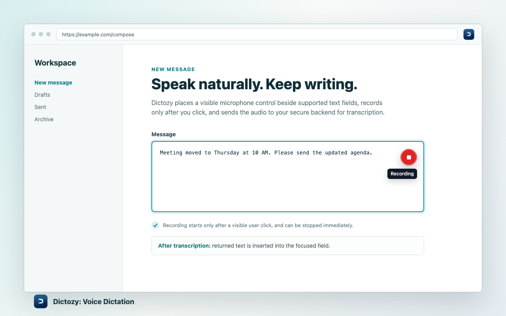
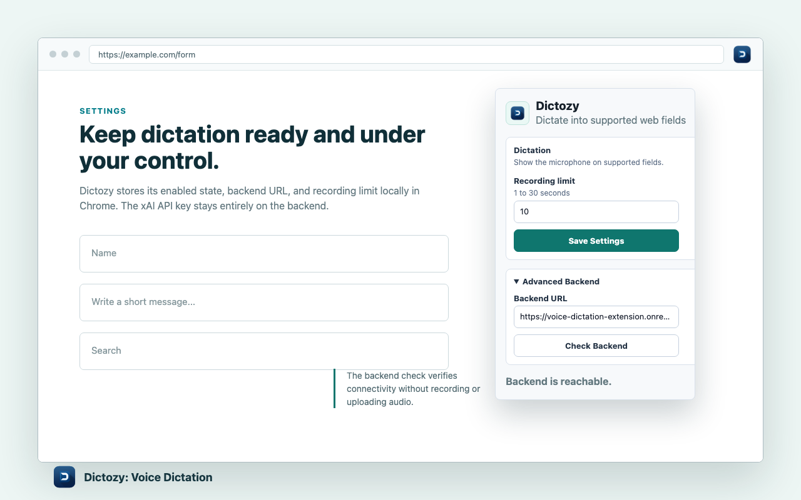

Chrome voice dictation
Speak into web fields without leaving the page.
Dictozy adds a visible microphone button to supported text fields, records only when you click, and inserts the transcript back where you were writing.
How it works
Dictation that stays close to the field you are using.
Focus a supported input, click the Dictozy microphone, speak a short phrase, then stop recording. Dictozy sends the clip to its FastAPI backend for speech-to-text transcription and inserts the returned text into the active field.
Use a normal text input, textarea, contenteditable field, or ARIA textbox.
Chrome asks for microphone access through its normal permission flow.
The transcript is inserted into the field and standard input events are dispatched.

Control when it appears
A focused popup for everyday control.
Turn Dictozy on or off, set the recording limit, and check backend connectivity from the popup. The default recording limit is 10 seconds and can be adjusted for shorter or longer clips.
Privacy basics
Clear recording behavior, narrow data flow.
Dictozy records only after a visible user action. It ignores sensitive and unsupported fields, sends audio to the backend for transcription, and keeps provider API keys out of the extension.
- Recording starts only after the page microphone button is clicked.
- Password and other sensitive or unsupported fields are ignored.
- The extension does not collect browsing history, existing field contents, or surrounding page content.
- The backend application does not intentionally persist raw audio or transcripts.
Get started
Install Dictozy for Chrome.
Dictozy is ready as a Chrome extension backed by a FastAPI transcription service. Install it, focus a supported text field, and use the visible microphone button to dictate.